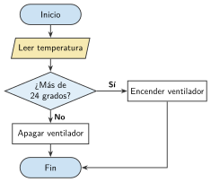
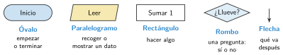
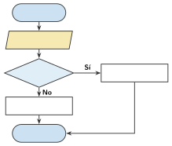

Diagramas de flujo: símbolos y reglas
🤔 Pienso5 min
Qué hago aquí: Piensa un momento y contesta con lo que ya sabes. No pasa nada si no lo sabes: es para empezar.
Sigue el diagrama con 30 grados y con 18 grados. ¿Qué hace el ventilador en cada caso?

📖 Leo y aprendo15 min
Qué hago aquí: Lee despacio, mira los dibujos y los ejemplos, y quédate con la idea clave del final.
Un diagrama de flujo es el dibujo de un algoritmo. Cada paso va en un símbolo. Las flechas dicen qué va después.

✏️ Hago25 min
Qué hago aquí: Haz las actividades en orden. Empieza siempre por las básicas.
Dibuja el símbolo de cada paso: Inicio, Leer la nota, ¿Nota mayor o igual que 5?, Sumar 1.
¿Cuántas flechas salen de un rombo? ¿Qué se escribe en ellas?
Completa el diagrama de una farola. Escribe en cada símbolo: Inicio, Leer la luz, ¿Es de noche?, Encender, Apagar, Fin.

Este rombo dice «Mirar la puerta». ¿Qué está mal? Escríbelo bien.
Dibuja el diagrama de flujo de un timbre: si alguien pulsa el botón, suena; si no, no hace nada.
✏️ Puedes responder escribiendo, con un dibujo o un esquema, o contándolo en voz alta.
🚀 Amplío (si quieres saber más)
Qué hago aquí: ¿Has terminado? Lee la curiosidad o elige el reto. Es voluntario.
Dibuja el diagrama de un juego: el robot piensa un número del 1 al 10. Tú intentas adivinarlo. Si fallas, te dice «mayor» o «menor» y vuelves a probar.
✅ Compruebo5 min
Qué hago aquí: Contesta sin mirar la ficha y marca cómo lo llevas.